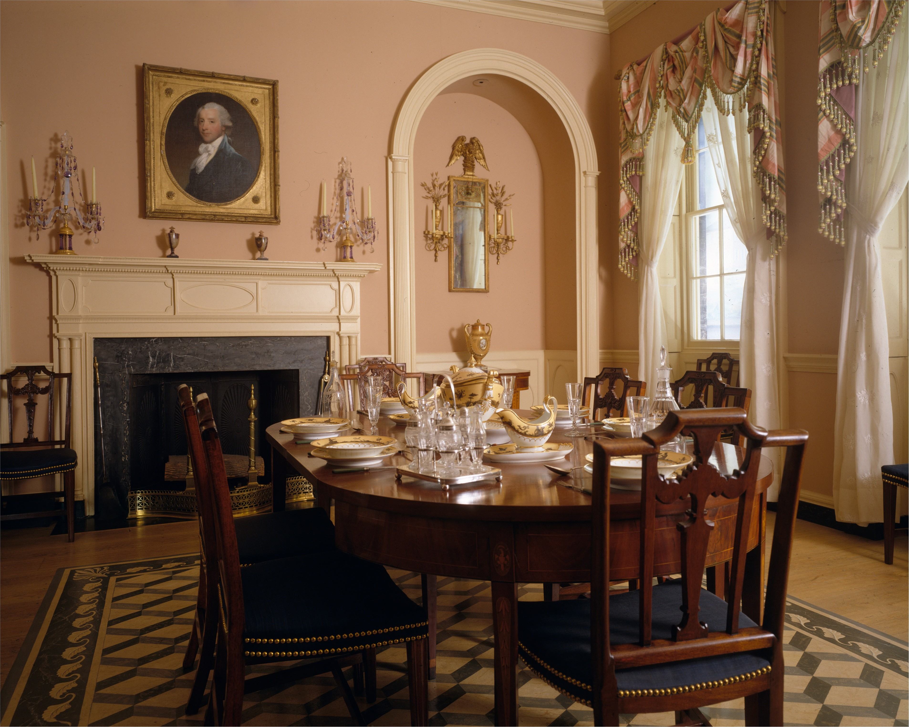
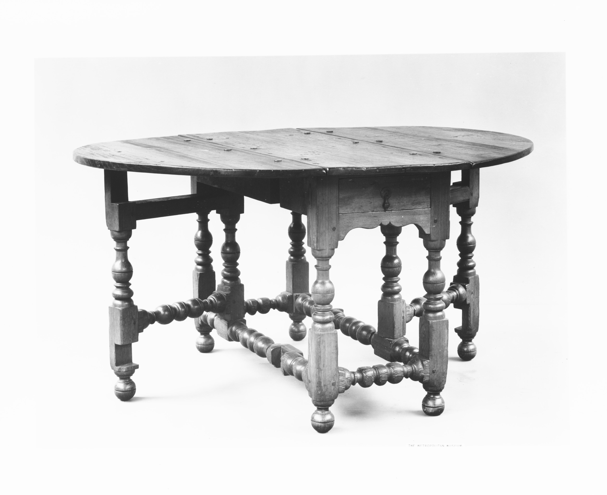
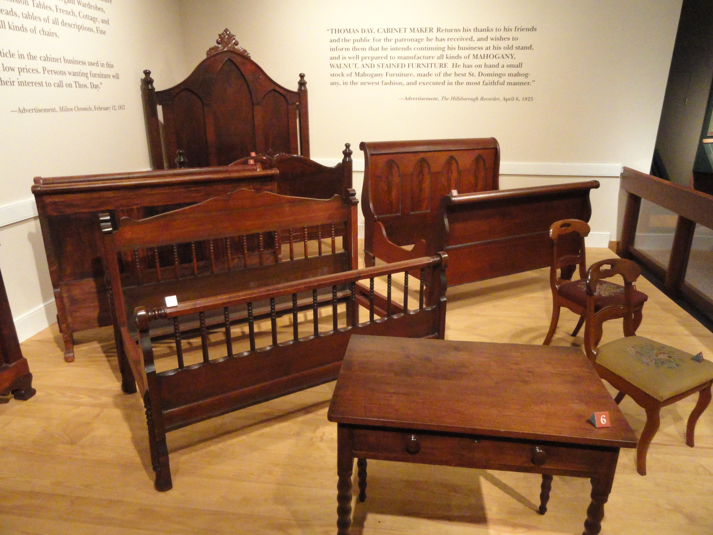
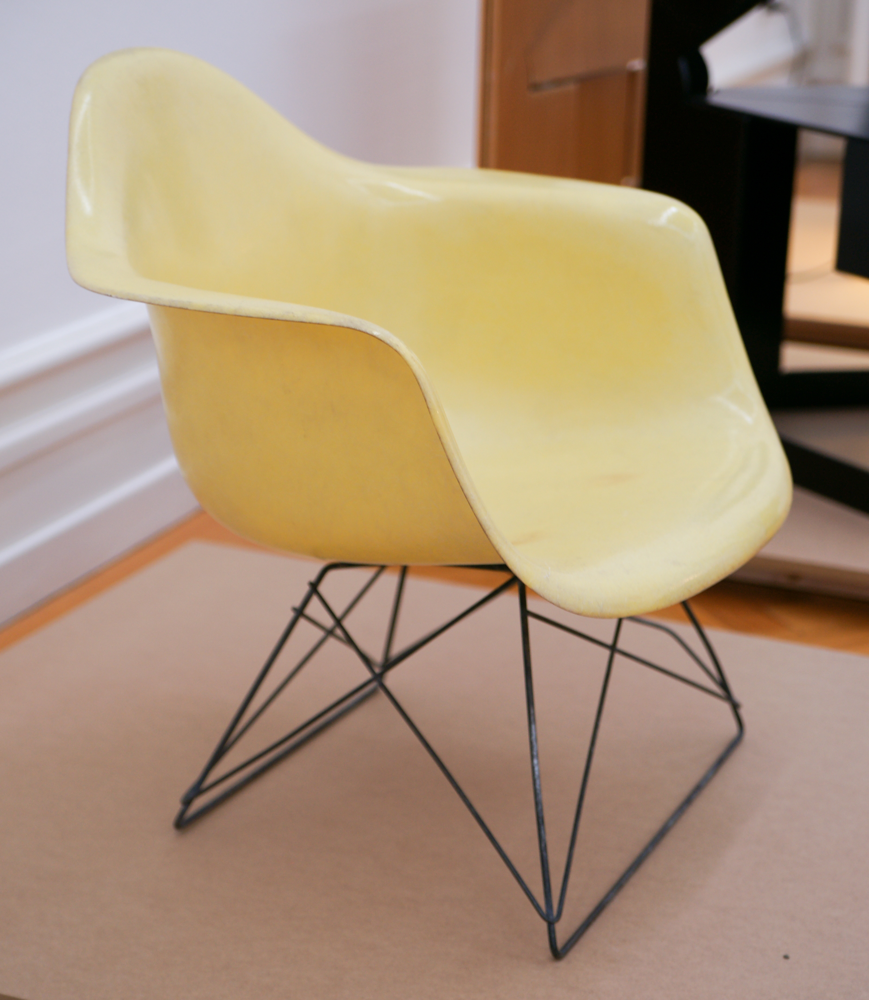

Open this file from the repo root so relative src paths resolve. See RIGHTS.md.
the-room-is-invented

gateleg-and-drop-leaf / reading-a-table-now

thomas-day-southern-shops

midcentury-eames-saarinen
